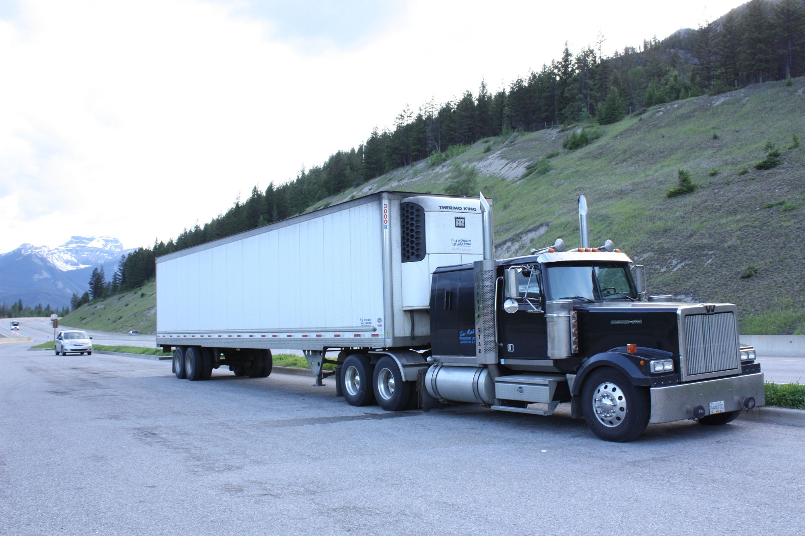
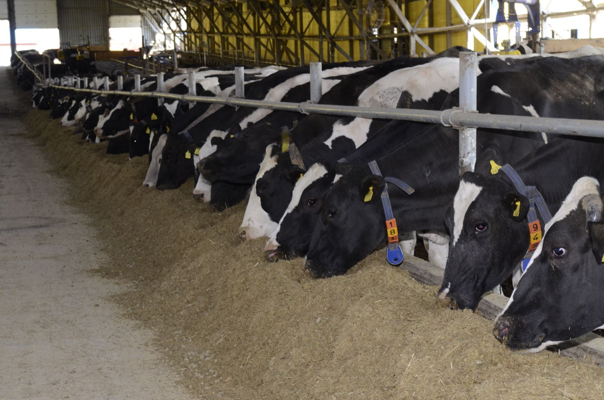
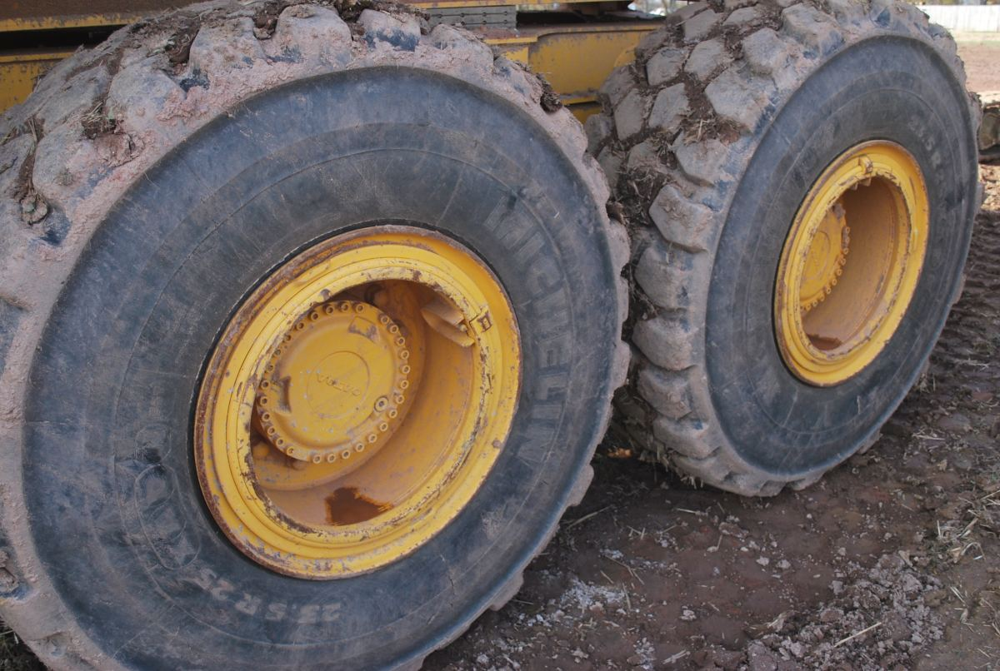
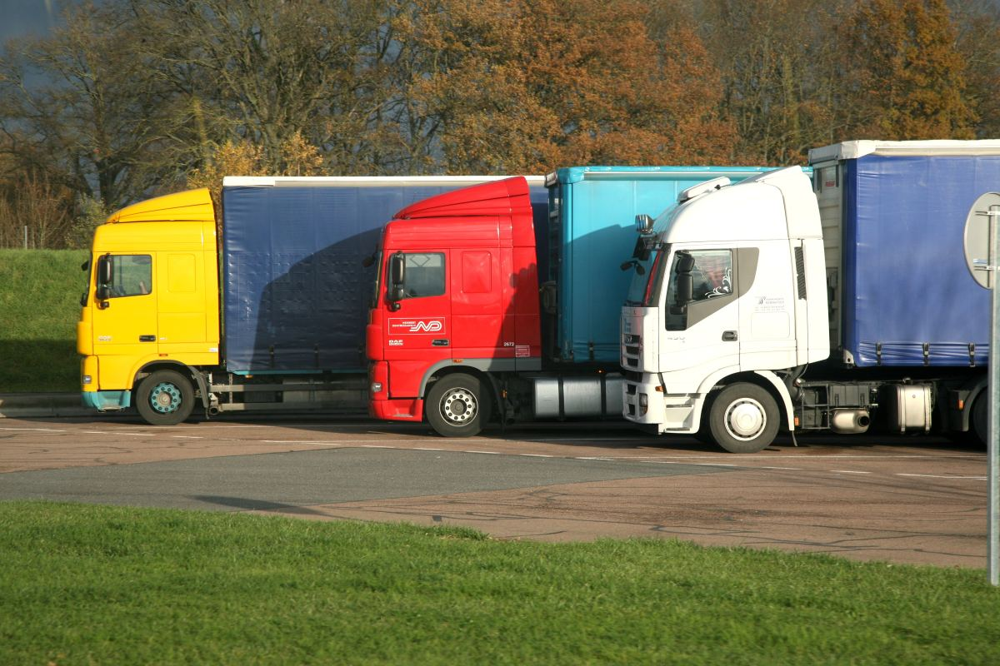
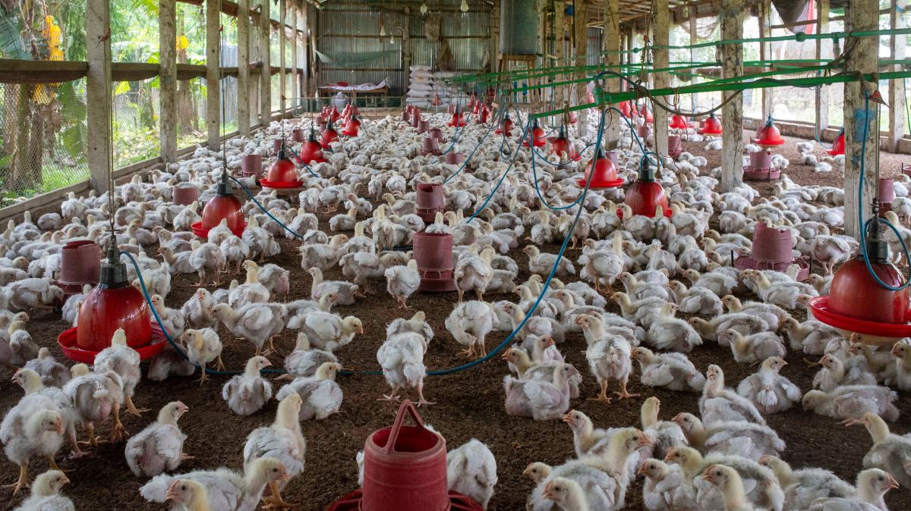
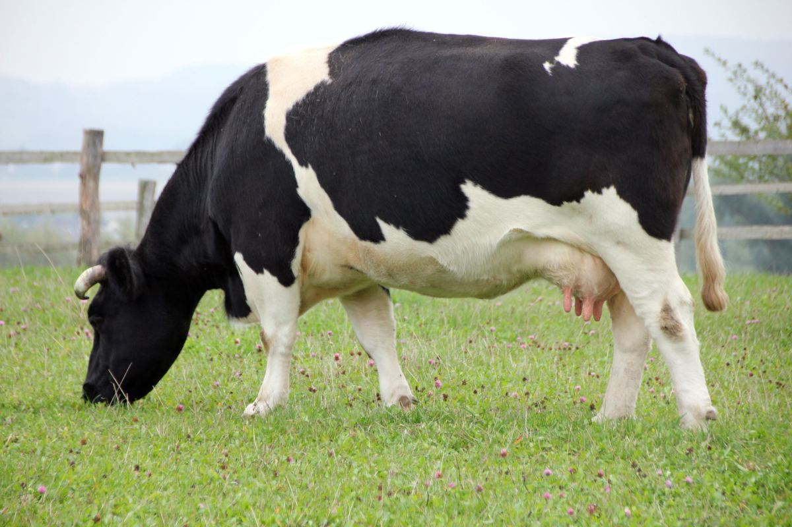
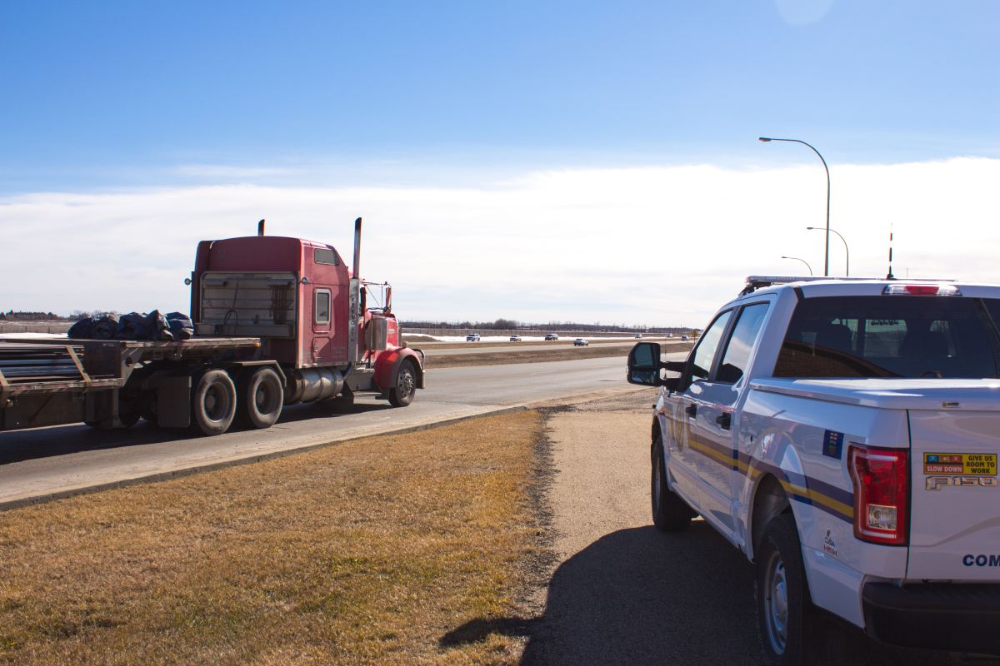

01
La rampa y el portalón
Lo primero que toca el suelo del plantel y lo último que alguien lava. Es la pieza que hace de puente entre los dos lados.
Gorbea · Región de La Araucanía
Un camión que descargó en un plantel y sale al siguiente no lleva sólo la carga. Lleva barro, restos y todo lo que había en el piso del acoplado. Por eso existe una línea que hay que cruzar antes de entrar, y por eso existe esta planta.
01 — La pieza de esta página
Un camión lavado por fuera se ve impecable y puede seguir trayendo todo. La suciedad que importa está donde no se mira, y son siempre los mismos siete lugares. Esta lista sirve para revisar un trabajo propio o el de cualquier proveedor.
01
Lo primero que toca el suelo del plantel y lo último que alguien lava. Es la pieza que hace de puente entre los dos lados.
02
Donde se acumula todo. Un piso «barrido» no es un piso lavado, y la diferencia se nota recién con agua.
03
Donde el chorro no llega de frente. La materia orgánica se queda justo ahí, y ahí es donde no sirve de nada lo que se aplique después.
04
El barro que viaja. Un paso de rueda cargado suelta tierra kilómetros después, ya adentro del siguiente predio.
05
Nadie se agacha a mirar y es la superficie más grande del camión. Se lava desde abajo o no se lava.
06
Pedales, alfombra y volante. El camión puede quedar perfecto por fuera y el chofer haber bajado y subido tres veces.
07
Palas, cuñas, tacos, el calzado. Todo lo que bajó del camión y volvió a subir es parte del mismo problema y casi nunca está en el procedimiento.
Esta lista es conocimiento general del rubro, escrito por mí, y sirve igual para cualquier planta del país. No describe el procedimiento de Servimax: qué incluye su servicio, con qué equipo y en qué tiempo, lo completa el negocio antes de publicar.
El camión pasa.
Lo que trae, si nadie lo saca, también.
La línea
Es el concepto entero de la bioseguridad y no tiene nada de complicado: hay un lado sucio y un lado limpio, y entre los dos hay una línea. Esta página está partida en esa línea: todo lo de arriba pasa antes; todo lo de abajo, después.
02 — Después de la línea
Los seis pasos son conocidos. Lo que casi nunca se respeta es el orden y el tiempo, y sin esos dos el trabajo se hace igual y no sirve. Éste es el punto que separa un lavado de una desinfección.
A mano, con pala y escobillón. Todo lo que se pueda retirar seco se retira seco: lo que entra al agua después hay que sacarlo dos veces.
Agua y detergente, de arriba hacia abajo y del fondo hacia la puerta. Al revés se vuelve a ensuciar lo ya lavado, que es el error más común de todos.
El agua que queda en el piso diluye lo que venga después. Es un paso que no cuesta nada y que casi siempre se salta por apuro.
Desinfectar sobre suciedad no desinfecta. Es la frase que resume el oficio: la materia orgánica consume el producto antes de que llegue a hacer algo. Si los tres pasos anteriores no se hicieron, éste es decorativo.
El paso que todos se saltan y el único que no se ve. Un producto necesita quedarse puesto un rato para hacer efecto; si se enjuaga o se seca antes, se pagó el producto y no se hizo el trabajo. Cuánto tiempo lo indica el producto que se use, y ese dato lo pone quien lo aplica — acá no va a aparecer ninguna cifra.
Patente, fecha, hora y quién lo hizo. Sin eso, el trabajo existió pero no se puede demostrar, y para un plantel que audita a sus transportistas es casi lo mismo que no hacerlo.
Acá no se nombra ningún producto, ninguna concentración y ningún tiempo en minutos, a propósito: son datos técnicos que dependen del desinfectante autorizado que se use y del uso al que se destine, y una página comercial no es el lugar para fijarlos.

Quién necesita esto
El que transporta y el que recibe. Y casi siempre, el que recibe se lo exige al que transporta.

03 — A quién le sirve por escrito
La mayoría de las veces el que contrata no es el que se preocupa: el plantel le exige el requisito al transportista, y el transportista sale a buscar quién se lo cumpla. Esa cadena explica todo el rubro.
Por eso lo que se vende no es sólo el lavado: es poder acreditar que se hizo, con patente, fecha y hora. Una página que lo explique le ahorra al transportista la conversación entera.
Lista de ejemplo de los clientes habituales del rubro. A cuáles atiende Servimax de verdad, con qué modalidad y en qué horario, lo completa el negocio: está armada y vacía a propósito.
04 — Los dos lados





05 — Contacto
Si es un requisito de un cliente suyo, dígalo al llamar: cambia lo que hay que dejar por escrito.
Las seis líneas en cursiva son las que hay que llenar antes de publicar. «¿Atiende sin cita?» es la más importante de todas: un camión que va en ruta decide en el momento, y si no sabe que puede llegar, no llega.
Para el dueño de Servimax
Y eso, lejos de ser malo, es la mejor posición comercial que existe: el que llama ya decidió que necesita el servicio. Lo único que está eligiendo es a quién.
En esa elección pesan tres cosas: dónde queda, si atiende cuando el camión va pasando y si entrega algo por escrito. Las tres se contestan en una página y ninguna se contesta en una ficha de Google.